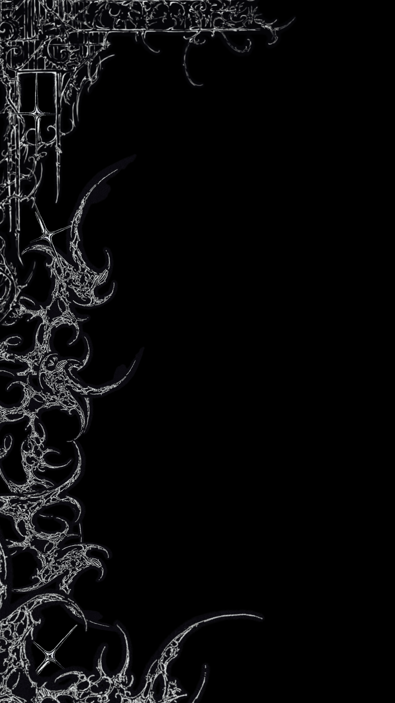
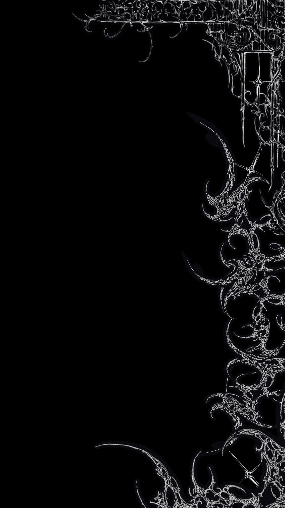

黒猫堕天
— DATENSHI —
黒猫堕天
れんは…ただの借り物の名前だ。だが、あなたが私の人となりと、私がしてきたことを覚えていれば…私はれんになる。
隠れ家
戦場
01OverwatchNAKIRIAYAME#2660
02TEKKEN
MY FLAWS BURN THROUGH MY SKIN LIKE DEMONIC FLAMES FROM HELL
$UICIDEBOY$ · BACKGROUND SOUNDTRACK
Click enter to begin listening.